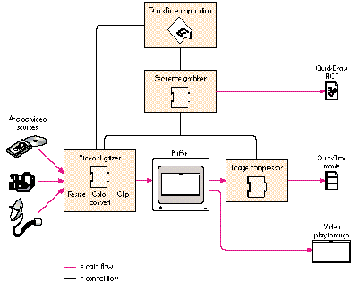
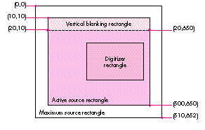
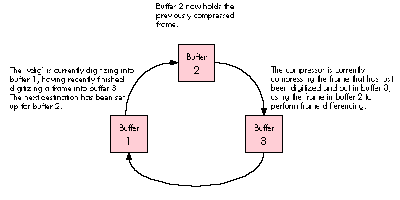
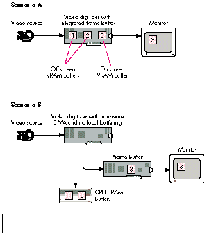
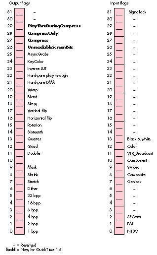
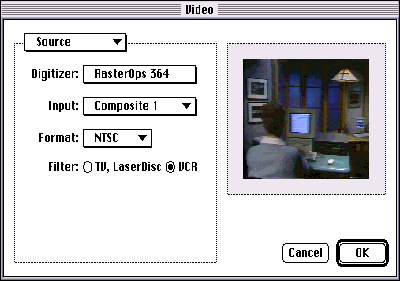

With the introduction of the 'vdig' component in QuickTime 1.0, Apple established an
API that encompassed the critical features of video digitizing hardware. This article
takes a closer look at the more complex aspects of the QuickTime 1.0 interface and at
the new functionality provided by QuickTime 1.5. Thanks to the QuickTime framework,
application writers and video digitizer developers have begun to deliver the kind of
high-performance solutions we've all been waiting for. And the evolution of this
technology has just begun.
Video digitizing hardware on the Macintosh is not new. Way back in 1990, dozens of
hardware developers were offering video digitizing cards that they hoped would score
big in that elusive but potentially lucrative market called multimedia. However,
because these products targeted different niches and had different feature sets, there
was a lot of chaos and redundancy in the marketplace. Each video digitizer card had its
own API. A multimedia software developer who wanted to support more than one
specific card had to either write a single application that included code for the API of
every card on the market or else release multiple versions of an application, one
version for each card. The inefficiency of this situation kept developers from
introducing innovative products quickly. Users, for their part, were confused by the
vast differences in the user interfaces of various products and in the capabilities of the
hardware.
The introduction of QuickTime in December 1991 changed all this by providing a
standard video digitizing interface. The component nature of QuickTime allowed video
digitizer manufacturers to concentrate on making value-added hardware and software,
secure in the knowledge that their products would work with whatever
general-purpose video capture and editing applications were out there. Application
writers could at last code to a standard interface and take advantage of improvements in
the underlying hardware as they came along. Customers also benefited from a standard,
and usually simplified, interaction with these devices.
So much for history! This article takes a look at the present and future of QuickTime
video digitizing from two perspectives -- that of the digitizer developer and that of the
video application developer (although the video neophyte will find valuable
information here as well). The article focuses on the less understood areas of the 'vdig'
interface and the new features in QuickTime 1.5. Because a discussion of video
digitizing under QuickTime would be incomplete without a look at the video digitizer's
main client, the sequence grabber, we also briefly examine this powerful component.
We conclude with a wish list of features for the next generation of video digitizing
products.
To get the most out of this article, you need to be familiar with QuickTime components
in general, video digitizer components specifically, and some basic video terminology.
For an overview of components, read our article "Techniques for Writing and
Debugging Components" in Issue 12 ofdevelop. We also suggest that you read Chapter
7, "Video Digitizer Components," inInside Macintosh: QuickTime Components(which is
included in the QuickTime Developer's Kit v.1.5). Finally, while we've attempted to
interject definitions of some basic video terms, the References box at the end of this
article lists some of our favorite books on video. If you're really interested in dazzling
your friends with your new-found video expertise, you'll want to investigate some of
these books.
This issue's CD contains two pieces of sample code related to this article. The 'vdig'
code is an example of a software-only digitizer. You can use it as a template to write
your own video digitizer components or as a vehicle for testing grab applications when
you don't have any video digitizing hardware. The sample application, HackTV, shows
how to use the sequence grabber to preview and record movies. HackTV can use either
the software 'vdig' provided or a hardware 'vdig' that you may already own. HackTV can
also be used by 'vdig' makers to test their code.
As Figure 1 shows, the process of making movies involves several components. The
sequence grabber component (component type 'barg') plays an especially critical role.
It's responsible for coordinating the activities of the lower-level components to
achieve different results -- like displaying video in a window, grabbing a single
picture, or grabbing a movie. By protecting application developers from having to deal
with the low-level management of the video digitizer, the sequence grabber makes it
much easier to incorporate video input capabilities in applications. Note that the
sequence grabber also handles audio input devices and synchronization of picture and
sound. For the sake of simplicity, these tasks aren't shown in Figure 1.

Figure 1 Grabbing Video -- The Big Picture
Data flow in the video digitizing pipeline begins with an analog video source like a
video camera, but it could also be a VCR, a laser disc, or a direct broadcast feed. The
video digitizer's primary purpose in life is to convert the analog signal into a digital
form that can be either displayed in the frame buffer or processed further by an image
compressor. The video digitizing hardware can optionally perform resizing, color
conversion, or clipping. In the absence of hardware support for theseoperations, the
sequence grabber will sometimes provide them, as we'll explain later. If the
application's request is for video in a window, the process is complete. (From a video
digitizing perspective, displaying live video in a window is calledplay through, and
capturing video to a movie is called capturing or grabbing. The sequence grabber calls
these operationspreviewingand recording, respectively.) When a movie is requested,
an image compressor processes the data further, and the result is stored either in
system memory or to disk.
An important restriction of the QuickTime 1.0 video capture process is that the
digitizer is limited by the image compressor. Since the grabbed image has to be
perfectly still while the compressor is working, the digitizer can't grab the next
frame until the compressor is finished with the current one; otherwise, there will be
frame tears. Thus, the speed of the compressor has a significant influence on the
effective capture rate of the digitizer. (For a discussion of industry-standard frame
rates and acceptable QuickTime capture rates, see "Frame Rates and Motion Quality.")
One of the biggest challenges in making a movie is figuring out how to compress the
data fast enough to maintain a good effective capture rate.
In this section, we explore a few QuickTime 'vdig' topics that seem to give developers
the most trouble when they first undertake the task of writing a video digitizer
component. WhileInside Macintoshis the definitive reference source for all the
information we present here and for all of QuickTime, this section will give you
additional insight into the more difficult aspects of rolling your own 'vdig'.
To illustrate some specific points, this section presents code excerpts from our
software implementation of a 'vdig'. In practice, how you write a video digitizer
component depends heavily on your particular digitizer hardware implementation. For
the sake of illustration, however, we'll simulate some hardware features with
software that provides roughly equivalent functionality.
GETTING VIDEO COORDINATE SYSTEMS STRAIGHT
The coordinate system for video digitizers can seem confusing, but it's actually quite
straightforward. The common mistake is to try to map the digitizer coordinate system
onto the QuickDraw global coordinate system, even though the two aren't related. The
critical point to keep in mind is that when referencing the video source, you're
working in a coordinate system that's specific to your digitizing hardware. All
cropping rectangles are relative to this coordinate system.
Figure 2 shows the four rectangles that define the video source. The MaxSrcRect
defines the maximum source area that the digitizer is capable of grabbing. Typically
this area includes all or portions of the vertical and horizontal blanking areas. Note
that you don't have to define the top left point of MaxSrcRect as 0,0; this is an entirely
arbitrary reference point that 'vdig' developers can define as they choose. The other
three rectangles are defined in relation to MaxSrcRect. The ActiveSrcRect is the region
of the maximum source rectangle that contains the actual video image. The first pixel
of active video is the top left corner, and the last pixel is the bottom right.

Figure 2 A Video Digitizer Coordinate System
The DigitizerRect describes the area of the MaxSrcRect to be captured -- the image
that the user will actually see, although it hasn't been scaled yet. The DigitizerRect
defaults to the area of the ActiveSrcRect; to describe a cropped image, the
DigitizerRect is usually defined as a portion of the ActiveSrcRect. It's not uncommon
for part of the blanking signal to be displayed in the ActiveSrcRect. This is because
different source devices -- like VCRs, laser discs, and broadcast signals -- send out
slightly different analog signals. To align the image, a 'vdig' client can nudge the
DigitizerRect a few pixels in the appropriate direction using VDSetDigitizerRect.
The last rectangle, VBlankRect, defines the area of vertical blanking. This region can
contain vertical interval time code (VITC), closed captioning, and teletext. For those
video dweebs out there, this corresponds to lines 10 to 19 of each field of the incoming
video.
Remember, all rectangle coordinates are relative to MaxSrcRect. MaxSrcRect,
ActiveSrcRect, and VBlankRect are always fixed and hardware dependent. The only
control that a client has is in the definition of DigitizerRect. The following code shows
how to implement the VDGetMaxSrcRect call for a 'vdig'. Implementing the
VDGetActiveSrcRect and VDGetVBlankRect calls is very similar.
pascal VideoDigitizerError GetMaxSrcRect
(Handle storage, short inputStd, Rect *maxSrcRect)
{
long error = noErr;
if (inputStd == ntscIn) // Example supports only NTSC.
SetRect(maxSrcRect, 0, 0, kMaxHorNTSCIn,
kMaxVerNTSCIn+kVerBlank);
else
error = paramErr;
if (!error)
(**storage).maxSrcRect = *maxSrcRect;
return (error);
}
SetDigitizerRect, shown below, is also very straightforward. Notice that the
DigitizerRect must fully intersect the MaxSrcRect.
pascal VideoDigitizerError vdigSetDigitizerRect
(vdigGlobals storage, Rect *digiRect)
{
Rect tempR;
// Can't be empty.
if (!digiRect || EmptyRect(digiRect)) return (paramErr);
// They must intersect . . .
if (!SectRect(digiRect, &(**storage).maxSrcRect, &tempR))
return (paramErr);
// . . . completely.
if (!EqualRect(digiRect, &tempR)) return (paramErr);
(**storage).digiRect = *digiRect;
. . .
// Insert hardware-dependent code to crop.
. . .
return noErr;
}
One more very important point to understand about video coordinate systems is that
scaling and translation can be specified either as a matrix or as a destination rectangle.
Your digitizer must support both transformation methods. If the matrix is nil, use the
destination rectangle; otherwise, ignore it and use the matrix. The 'vdig' must offset
the top left of the DigitizerRect to 0,0 before applying the matrix, or the video won't
be positioned correctly. This isn't necessary when using the destination rectangle. By
the way, the sequence grabber uses the destination rectangle, and not the matrix, to
specify scaling and translation, although this may change at any time.
ACCELERATING THE FRAME CAPTURE PROCESS
Video digitizer clients -- such as an application or, more likely, the sequence grabber
-- that want to configure a 'vdig' for video play through can do so by specifying a video
source rectangle with VDSetDigitizerRect and a destination with
VDSetPlayThruDestination. The live video stream is then enabled via the
VDSetPlayThruOnOff call. Clients that want to capture and store images to make a
QuickTime movie, on the other hand, must deal with the tradeoff between compression
time and capture rate described earlier. This section explains how a video digitizer
client and a 'vdig' can cooperate to maximize the effective capture rate and thus the
overall performance of a digitizing system.
At the most basic level, the frame capture process involves grabbing a frame,
compressing it, appending the frame to a movie, grabbing another frame, compressing
it, and so on. Unfortunately, while this synchronous frame grabbing (with the
VDGrabOneFrame call) is fine for single grabs, it's too slow for capturing moving
images. The real killer when using the synchronous call is that no parallel processing
can occur. Once the call to the video digitizer is made, the entire system is brought to a
stop waiting for the completion of the frame grab. Since the digitizer must synchronize
to the incoming video's vertical blanking interval, this can mean waiting the duration
of up to one or two video fields (33,333 to 66,666 microseconds for NTSC video).
What's more, because the video stream must be stopped at the conclusion of the call and
restarted to grab another frame, the actual wait between synchronous grabs tends to be
even longer.
A video digitizer client can achieve parallel processing, and thus better performance,
if it grabs asynchronously, sending the image either to a single buffer or to a series of
buffers. If you use just one buffer, you get a slight performance improvement over a
synchronous grab. The VDGrabOneFrameAsync call tells the digitizer to kick off a
frame grab and to return immediately to the caller (this typically takes around 500
microseconds). The compressor can be turned loose on the frame being grabbed
without waiting for the grab to be complete. (Suchbeam chasing assumes that the
compressor is slower than the video digitizer and won't catch it. Most software
compressors today are in fact slower than digitizers.) Once the compressor is finished
with the frame, the client makes the VDDone call to determine whether the first frame
grab is complete before requesting another one. This process continues until recording
is terminated.
One problem with such single-buffer asynchronous grabs is that the client must still
start and stop the video stream with each call, incurring the same overhead as in a
synchronous grab. An even more serious problem is that the 'vdig' client must handle
frame synchronization between the digitizer and compressor; otherwise, the resulting
movie will contain annoying frame tears. Why does this happen? Suppose the
VDGrabOneFrameAsync call is made while the digitizer is in the middle of a frame.
The digitizer will honor the request and return immediately, but the video won't really
start until the beginning of the next field. If the compressor is turned loose as soon as
the digitizer returns, it will be compressing stale data. And depending on how slow the
compressor is, new digitizer data may overwrite the stale data in midstream, all of
which is bad news.
Clients of your 'vdig' can attain still better performance if the 'vdig' implements
multiple buffers. By constantly ping-ponging between two or more buffers, the 'vdig'
can increase the effective capture rate, potentially to the maximum rate. The process
works roughly as follows: A 'vdig' client initializes the process by making the video
digitizer call VDSetupBuffers (we'll look at this in more detail momentarily). The
client then begins the capture process by calling VDGrabOneFrameAsync to fill buffer
1 with a frame and to start the next grab into buffer 2. The client calls VDDone to make
sure that the frame grab in buffer 1 is complete. Next, the compressor compresses the
frame in buffer 1. Then VDGrabOneFrameAsync is called to send the next digitized
frame back into buffer 1, and the compressor starts compressing the contents of
buffer 2. The whole sequence is repeated for successive frames.
If you think two buffers are a snap, that's great, because in practice there are often
three. Figure 3 shows a snapshot of the asynchronous grab process when three buffers
are implemented. The number of buffers your 'vdig' needs to implement, by the way, is
typically equal to the number ofconcurrent operations a video digitizing system must
perform on those buffers. The example shown in Figure 3 uses three buffers to
supportinterframe compression. This technique, which is also known as frame
differencing, makes it possible for a compressor to eliminate the redundant data in a
sequence of frames -- essentially the parts of the image that stay the same from one
frame to the next. At specified intervals, all the data in a frame is saved; this frame is
known as akey frame. Depending on the content of the image sequence, frame
differencing can provide a substantial increase in compression efficiency.
Figure 3 shows what's going on in three hypothetical buffers at a specific moment in
time. The whole process of grabbing a frame from the digitizer and compressing it
with frame differencing involves the following steps:

Figure 3 Multiple Buffers in Motion
A word of caution: A common mistake in using VDGrabOneFrameAsync is to pass in the
current buffer to be worked on rather than the next destination buffer. By telling the
digitizer in advance where the next frame should be placed, you give the digitizer all
the information it needs to do a fast buffer change once the current frame grab is
complete. The time required to reposition the video buffer is less than the time in a
vertical blanking period, so the digitizer theoretically has enough time to grab every
frame without the need for resynchronization. In this case, the obstacles to achieving
the maximum capture rate are the other processes involved, such as compression and
disk access speeds. Note that there's no need to turn the digitizer on and off with
multiple buffers because the video frame in buffer 1 will in effect be frozen once the
digitizer repositions its free-running output to buffer 2.
Now let's take a step back and look at the interaction between the video digitizer client
and the 'vdig' during buffer initialization. Figure 4 shows two possible scenarios. In
scenario A, the card has local memory available for multiple buffering but doesn't
support generic hardware DMA. (Digitizers that support hardware DMA can send the
video data to any available memory; they aren't restricted to local memory.) In
scenario B, the digitizer supports hardware DMA but doesn't have local memory for
multiple buffering.

Figure 4 Initializing Multiple Buffers -- Two Scenarios
For both scenarios in Figure 4, the basic sequence of events is similar.
The differences between the scenarios depicted in Figure 4 are subtle but very
important to understand. First, in scenario A, the sequence grabber uses the integrated
frame buffer when setting up the play-through destination. In scenario B, where the
digitizer is more flexible in its ability to redirect video data, the sequence grabber can
make the play-through destination any frame buffer -- that is, any screen -- that the
user chooses.
The second difference between the two scenarios in Figure 4 is in how the sequence
grabber finds available memory and partitions that memory into multiple buffers.
Because the digitizer in scenario A doesn't support hardware DMA, local memory on
the card is the only memory available for multiple buffering. The sequence grabber
will make the VDGetMaxAuxBuffer call to determine the maximum usable memory
available. In our example, three buffers are allocated. If sufficient space for three
buffers isn't available, the sequence grabber will make the buffer sizes smaller and
use software to expand the frame to the desired size. In contrast, the video digitizer in
scenario B supports hardware DMA and doesn't have any local buffering, so the
sequence grabber will use system memory for buffer allocation. In this case the size of
the buffers is limited by the amount of free memory available. Once the number and
size of the buffers have been determined, VDSetupBuffers is used in both cases to
communicate this information to the 'vdig'.
To sum up, a 'vdig' client looks at two video digitizer capabilities to determine how to
initialize buffers -- the availability of local off-screen memory and the digitizer's
ability to do generic hardware DMA. While there are actually four possible
combinations of these two capabilities, the two scenarios shown in Figure 4 define the
major options for initializing multiple buffers. The two combinations not shown in
the figure are a 'vdig' that doesn't provide any local off-screen memory and doesn't
support hardware DMA, and a 'vdig' that supports both capabilities. If a 'vdig' has
neither capability, it's not a very interesting digitizer -- just consider yourself
lucky that it can digitize video into a window at all. At the other end of the spectrum,
the increasing numbers of digitizers that support both local memory and hardware
DMA areveryinteresting. With these digitizers, buffers are allocated in the local
off-screen memory first for performance reasons, while hardware DMA is normally
used to display video in a window on any screen.
At this point you're probably asking yourself, "Do I really need to understand this
stuff?" The answer for video digitizer developers is a resounding "Yes," especially if
you want to squeeze out every last drop of performance. For those interested only in
the general concepts, we've probably led you down a road you wish you hadn't
embarked on. Sometimes the quest for new knowledge hurts!
If you're writing a digitizer, you'll be interested in the following code, which shows
how to write the routines that support multiple-buffer asynchronous frame grabs.
Notice that in the vdigSetupBuffers routine, pendingAsyncBuffer is used to keep track
of the next buffer to be grabbed. Here it's initialized to -1, which is not a valid buffer
number.
pascal VideoDigitizerError vdigSetupBuffers
(vdigGlobals storage, VdigBufferRecListHandle bufferList)
{
OSErr err;
MatrixRecord matrix;
short i;
RgnHandle clipRgn;
if (!bufferList) return paramErr; // Can't have empty list.
if (!(**bufferList).count) return paramErr;
// Can't have 0 buffers.
// Dispose of any buffers previously created.
if ((**storage).bufferList) {
DisposeHandle((Handle)(**storage).bufferList);
(**storage).bufferList = 0;
}
// Same with any clipRgn previously created.
if ((**storage).clipRgn) {
DisposeRgn((**storage).clipRgn);
(**storage).clipRgn = 0;
}
// Don't accept a mask if the 'vdig' can't clip.
if (!gCanClip && (**bufferList).mask) return paramErr;
// Copy the matrix if it exists.
if ((**bufferList).matrix)
matrix = *(**bufferList).matrix;
// Make a local copy.
HandToHand((Handle *)&bufferList);
if (err = MemError()) return err;
if (clipRgn = (**bufferList).mask) {
HandToHand((Handle *)&clipRgn);
if (err = MemError()) return err;
(**storage).clipOrigin = (**bufferList).list[0].location;
}
// Save the important stuff in private storage for later
// retrieval.
(**storage).bufferList = bufferList;
(**storage).clipRgn = clipRgn;
(**storage).pendingAsyncBuffer = -1;
(**storage).matrix = matrix;
// Do the important error checking when it's not
// performance-critical.
for (i=0; i < (**bufferList).count; i++) {
if (!validatePixMap(storage, (**bufferList).list[i].dest))
return paramErr;
}
return noErr;
}
The vdigGrabOneFrameAsync routine (below) is continually being called by the
sequence grabber once movie making starts. After some simple error checking, the
software digitizer draws the frame at the appropriate destination. The buffer used in
drawVideoFrame is the pending buffer that was passed into this routine on the last call.
While this isn't so important with the software-only video digitizer illustrated here,
it can give hardware digitizers some additional time to get things switched over and
started in anticipation of the next vdigGrabOneFrameAsync call.
pascal VideoDigitizerError vdigGrabOneFrameAsync
(vdigGlobals storage, short buffer)
{
VdigBufferRecListHandle bufferList;
// Bail if you can't do asynchronous grabs.
if (!gCanAsync) return digiUnimpErr;
// Make sure the buffer list is set up first with VDSetupBuffers.
if (!(bufferList = (**storage).bufferList)) return badCallOrder;
// Make sure the buffer request is within bounds.
if (buffer > (**bufferList).count) return paramErr;
// Get the buffer to draw into from the last one saved.
// This is the one saved in pendingAsyncBuffer.
if ((**storage).pendingAsyncBuffer != -1) {
short aBuf = (**storage).pendingAsyncBuffer;
if (aBuf == buffer)
DebugStr("\pasync grab into incomplete buffer");
drawVideoFrame(storage, (**bufferList).list[aBuf].location,
(**bufferList).list[aBuf].dest);
}
// Set up the next buffer to use when called.
(**storage).pendingAsyncBuffer = buffer;
return noErr;
}
IDENTIFYING DIGITIZER TYPES AND CAPABILITIES
No two video digitizers are alike. To make sure your 'vdig' component works smoothly
with QuickTime, it's critical to identify the capabilities your hardware provides.
The 'vdig' component interface attempts to be very flexible in allowing you to indicate
what your card can do. A 'vdig' specifies its type and capabilities in the DigitizerInfo
structure, shown below. Two calls -- VDGetDigitzerInfo and VDGetCurrentFlags --
give a client (normally the sequence grabber) access to information contained in this
structure.
typedef struct {
short vdigType;
long inputCapabilityFlags;
long outputCapabilityFlags;
long inputCurrentFlags;
long outputCurrentFlags;
short slot;
GDHandle gdh; // For vdigs with preferred screen
GDHandle maskgdh; // For vdigs that have mask planes
short minDestHeight; // Smallest resizable height
short minDestWidth; // Smallest resizable width
short maxDestHeight; // Largest resizable height
short maxDestWidth; // Largest resizable height
short blendLevels; // # of blend levels = 2 if 1-bit mask
long reserved;
} DigitizerInfo;
In the vdigType field, you specify which of the four types of digitizer you are. Either
you're a basic rectangular digitizing device or you're a device that supports clipping
-- an alpha channel device, a mask plane device, or a key color device. In the
capability flags fields, you indicate to clients what capabilities a particular digitizer
instance provides.
The current flags fields have the same attribute bit fields as the capability flags, but
they indicate the currently available capabilities, not the total possible capabilities.
By nature, some capabilities are mutually exclusive. For instance, if you support
NTSC and PAL input formats, at any given time you're actively doing only one of them.
The bit corresponding to the active standard is the one that would be set in the current
flags, while both would be set in the capability flags.
Figure 5 lists each of the attribute flags for input and output capabilities, with the
flags added to the API in QuickTime 1.5 shown in bold. Complete descriptions of the
flags can be found in Chapter 7, "Video Digitizer Components," ofInside Macintosh:
QuickTime Components.
One point we'd like to emphasize is that clients of your digitizer will be much happier
if you truthfully state what you can and can't do. The sequence grabber, in particular,
will function much better. So don't broadcast that you can support hardware play
through or hardware DMA unless you can! In addition, when designing your device's
feature set, it's better not to make your capabilities modal. For instance, don't build a
card that can resize in 32-bit-per-pixel mode but not in 16-bpp mode.
Applications also need to know about your capabilities. An application makes preflight
calls, like VDPreflightDestination, to your digitizer to determine whether its request
will be honored, denied, or changed. Digitizers are required to support all the
preflight calls.
Some examples. To see how the attribute flags are set, let's take a look at three
completely different fictional video digitizer implementations. One of the examples
includes the support provided by QuickTime 1.5 for digitizer hardware compression
-- a nifty feature we'll discuss when we look at the QuickTime 1.5 additions later in
this article.
As you consider the examples, pay particular attention to the use of the following
structure members and attribute flags, which seem to be among the least understood:
vdigInfo->inputCapabilityFlags[digiInVTR_Broadcast]
vdigInfo->outputCapabilityFlags[digiOutDoesDMA]
vdigInfo->outputCapabilityFlags[digiOutDoesDouble]
vdigInfo->outputCapabilityFlags[digiOutDoesQuad]
vdigInfo->outputCapabilityFlags[digiOutDoesHWPlayThru]
vdigInfo->outputCapabilityFlags[digiOutDoesAsyncGrabs]
vdigInfo->gdh
vdigInfo->maskgdhvdigInfo->blendLevels
The size of the MaxAuxBuffer is also very important if the device supports one. The
only way for a client to determine this is to make the VDGetMaxAuxBuffer call to see if
it returns valid data. See "What the $#%!! Is a MaxAuxBuffer, and Do I Have One?" for
details.

Figure 5 Video Digitizer Attribute Flags
For our first example of a fictional digitizer, let's suppose SuperOps announces an
entry-level video digitizing card with the following capabilities: The card has one
video input (an RCA-style connector) and can support only the NTSC video standard.
The card is a combined video digitizer and frame buffer. The frame buffer can support
1, 2, 4, 8, 16, and 32 bpp on a monitor that's 640 by 480 pixels. The video digitizer,
however, can display real-time video on its own frame buffer only in the 16-bpp and
32-bpp modes. Our SuperOps card doesn't support compression, but it does support
clipping via an alpha channel. Because it can resize the video but not zoom, scaling
only makes the video smaller. The card has additional local memory for grabbing in
16-bpp mode, but not in 32-bpp mode.
The interesting fields and their values for the SuperOps card are:
vdigType = vdTypeAlpha;
inputCapabilityFlags = digiInDoesNTSC | digiInDoesComposite |
digiInDoesColor;
outputCapabilityFlags = digiOutDoes16 | digiOutDoes32 |
digiOutDoesShrink | digiOutDoesMask |
digiOutDoesQuarter | digiOutDoesSixteenth |
digiOutDoesBlend | digiOutDoesHWPlayThru |
digiOutDoesAsyncGrabs;
gdh = // Handle to frame buffer graphics device
blendLevels = video16 ? 2 : (video32 ? 256:0);
In 32-bpp mode, there's no room for a MaxAuxBuffer, so the call to
VDGetMaxAuxBuffer fails. In 16-bpp mode, a MaxAuxBuffer is available because only
half of the on-board local frame buffer memory is being used, and the size of the
unused memory is equivalent to the display size, 640 by 480 pixels.
The second fictional card, the OneShot-O-Matic, is designed to do only single-frame
grabs. The card has three inputs -- composite, S-Video, and component RGB -- and
can support both the NTSC and PAL video standards on all three. The maximum size that
can be grabbed is a function of which input standard the card uses (for example, the
maximum size would be 768 by 576 pixels when decoding the PAL standard). Because
the OneShot-O-Matic can grab only to its local memory, it can't do hardware DMA --
that is, it doesn't support play through to any frame buffer. The OneShot-O-Matic
supports only 32-bpp grabs. Resizing, clipping, and hardware compression aren't
supported. The board is populated with 2 megabytes of memory, which is enough to
support the maximum size required by the PAL standard.
For the OneShot-O-Matic card, the interesting fields and their values are:
vdigType = vdTypeBasic;
inputCapabilityFlags = digiInDoesNTSC | digiInDoesPAL |
digiInDoesComposite | digiInDoesSVideo |
digiInDoesComponent | digiInDoesColor;
outputCapabilityFlags = digiOutDoes32 | digiOutDoesAsyncGrabs;
gdh = nil;
blendLevels = 0;
In this case, the MaxAuxBuffer will consume the entire 2 MB local buffer area. This
works out to be 524,288 available pixels in 32-bpp mode (2097152 / 4 bytes per
pixel). The representation of this as a width and height must be large enough to
support the largest grab size; thus 800 by 655 pixels would be valid, as would 700
by 748 pixels. Hardware resizing would have allowed multiple buffers to reside in the
MaxAuxBuffer. With this card, however, the video digitizer will be relying on the
sequence grabber to do resizing, color conversion, and on-screen placement
operations. Our third fictional card, the Verne-Motion, is designed to perform not
only video digitizing, but also hardware compression using a highly proprietary
algorithm called SqueezeMe. (We'll discuss compressed-source devices shortly.) The
card has one S-Video input and supports all input standards -- NTSC, PAL, and SECAM.
In addition, the Verne-Motion can simultaneously support two channels of video: an
RGB pixel stream formatted for display, and a compressed SqueezeMe stream to be
saved as a QuickTime movie. The card has a general-purpose DMA engine that can
direct these data streams either to memory on the card or to system memory. The
on-card memory is 4 MB and gives better performance than you get when you send the
video data to system memory. The Verne-Motion supports hardware clipping with an
8-bit mask plane, which can also be stored in local memory or in system memory. The
video input circuitry has a mode that distinguishes between clean broadcast-quality
input signals and noisier VCR-type signals. Finally, the Verne-Motion lets you
arbitrarily scale video images to make them up to two times larger in both the
horizontal and vertical directions.
The interesting fields and their values for the Verne-Motion card are:
vdigType = vdTypeMask;
inputCapabilityFlags = digiInDoesNTSC | digiInDoesPAL |
digiInDoesSECAM | digiInDoesSVideo |
digiInVTR_Broadcast | digiInDoesColor;
outputCapabilityFlags = digiOutDoes8 | digiOutDoes16 |
digiOutDoes32 | digiOutDoesStretch |
digiOutDoesShrink | digiOutDoesMask |
digiOutDoesDouble | digiOutDoesQuarter |
digiOutDoesSixteenth | digiOutDoesHW_DMA |
digiOutDoesHWPlayThru |
digiOutDoesAsyncGrabs | digiOutCompress |
digiOutPlayThruDuringCompress;
gdh = nil;
maskgdh = // Handle to local mask plane — 8 bpp deep
blendLevels = 256;
The size of the MaxAuxBuffer in this case would be 1024 by 1024 pixels in 32-bpp
mode (1024 * 1024 * 4 bytes per pixel equals 4 MB, which is the total available
memory). In the 16-bpp mode, the MaxAuxBuffer would be 2048 by 1024 pixels, and
in the 8-bpp mode, it would be 2048 by 2048 pixels.
As you can see from these examples, there are many different classes of video
digitizers out there. Your card may look very similar to one of the ones we've
presented, but it's more likely that you'll have to set different flags to describe your
card's features.
The sequence grabber makes life easier for application programmers by handling all
the messy details of controlling video digitizers, sound input devices, and compressors.
This marvelous piece of QuickTime has a very rich API that we won't even pretend to
cover in this article. However, the sequence grabber plays such an important role in a
video digitizing application that a brief introduction is in order. Note that while the
code excerpts below demonstrate how the sequence grabber can preview and record a
video channel, the HackTV application on the CD includes an audio channel as well.
Before we discuss previewing and recording, we want to briefly describe how the
sequence grabber can make up for functionality missing from a digitizer. For the
sequence grabber to be able to do this, the video digitizer must be able to use
off-screen memory -- either local memory on the digitizing device or, in the more
general case, any memory. (Recall that you can use the VDGetMaxAuxBuffer call to
locate local device memory.) As an example, let's see how the sequence grabber can
support color conversion.
Suppose a video digitizer can display video only to its own integrated frame buffer. In a
multimonitor system, this would mean a user could display video on only one of the
monitors. The sequence grabber comes to the rescue because it can use off-screen
memory for the grab and copy it to thedesired destination buffer, making the video
appear on one of the unsupported displays. Now suppose the digitizer is asked to
display video in a depth it doesn't support (say the user changes the graphics mode
from 32 bpp to 4 bpp with the Monitors control panel). The sequence grabber can
again use off-screen memory to do the right thing. Of course, you never get something
for nothing. All this buffer copying will adversely affect performance.
PREVIEWING
Previewing video with the sequence grabber is the equivalent of setting up the 'vdig' in
play-through mode to display live video on the computer screen. The code to make this
happen is shown below. Remember that the sequence grabber can simulate live video
play through for devices that don't support hardware play through.
// Find and open a sequence grabber.
gSeqGrabber = OpenDefaultComponent(SeqGrabComponentType, (OSType) 0);
// If we get a sequence grabber, set it up.
if (gSeqGrabber != 0L) {
// Get the monitor — in this case, the dialog
// window in which video is displayed.
gMonitor = GetNewDialog(kMonitorDLOGID, nil, (WindowPtr) -1L);
if (gMonitor != nil) {
// Initialize the sequence grabber.
GetPort(&savedPort);
SetPort(gMonitor);
ShowWindow(gMonitor);
result = SGInitialize(gSeqGrabber);
if (result == noErr) {
result = SGSetGWorld(gSeqGrabber, (CGrafPtr) gMonitor,
nil);
// Get a video channel.
result = SGNewChannel(gSeqGrabber, VideoMediaType,
&gVideoChannel);
if ((gVideoChannel != nil) && (result == noErr)) {
short width;
short height;
gQuarterSize = false;
gHalfSize = true;
gFullSize = false;
result = SGGetSrcVideoBounds(gVideoChannel,
&gActiveVideoRect);
width = (gActiveVideoRect.right -
gActiveVideoRect.left)/2;
height = (gActiveVideoRect.bottom -
gActiveVideoRect.top)/2;
SizeWindow (gMonitor, width, height, false);
// Preview the video only.
result = SGSetChannelUsage(gVideoChannel,
seqGrabPreview);
result = SGSetChannelBounds(gVideoChannel,
&(gMonitor->portRect));
}
// Go!
if (result == noErr)
result = SGStartPreview(gSeqGrabber);
}
SetPort(savedPort);
}
}
We establish a connection to the sequence grabber component in the usual way, with
OpenDefaultComponent. We initialize the sequence grabber, set up the graphics
environment, and allocate a new channel for video. We want the displayed video to be
one-quarter size, so we call SGGetSrcVideoBounds to see what size the source video is.
This function calls VDGetDigitizerRect, which returns the source video size equal to
the digitizer rectangle. We scale the height and width accordingly, and the new size is
sent to the sequence grabber via the SGSetChannelBounds routine. Finally, we call
SGStartPreview, which turns on the video digitizer by calling the digitizer function
VDSetPlayThruOnOff, and previewing begins.
RECORDING
Recording is very similar to previewing and is almost as simple. The following code
highlights the differences between recording and previewing.
// Start exactly the same way as for previewing.
// Find and open a sequence grabber.
gSeqGrabber = OpenDefaultComponent(SeqGrabComponentType, (OSType) 0);
// If we get a sequence grabber, set it up.
if (gSeqGrabber != 0L) {
. . .
if ((gVideoChannel != nil) && (result == noErr)) {
// Set up size the same as in previewing case.
short width;
short height;
gQuarterSize = false;
gHalfSize = true;
gFullSize = false;
result = SGGetSrcVideoBounds(gVideoChannel,
&gActiveVideoRect);
width = (gActiveVideoRect.right -
gActiveVideoRect.left)/2;
height = (gActiveVideoRect.bottom -
gActiveVideoRect.top)/2;
SizeWindow(gMonitor, width, height, false);
// Record and play images instead of just previewing
// them.
result = SGSetChannelUsage(gVideoChannel, seqGrabRecord |
seqGrabPlayDuringRecord);
result = SGSetChannelBounds(gVideoChannel,
&(gMonitor->portRect));
// Get ready. . .
result = SGSetDataOutput(gSeqGrabber,&gMovieFile,
seqGrabToDisk);
result = SGPrepare(gSeqGrabber, true, true);
// Go!
result = SGStartRecord(gSeqGrabber);
while (!Button() && !result) {
result = SGIdle(gSeqGrabber);
}
result = SGStop(gSeqGrabber);
}
. . .
}
There are several differences between recording and previewing. First we set up the
sequence grabber to record and to play through while recording. We next specify a file
for the movie to be written to, indicating that the movie be grabbed directly to disk.
For a short movie, we could grab to memory if we wanted. By default, the recording
time is limited by the system resources available -- in this case, disk space.
The SGStartRecord call initiates the grab to disk. SGIdle is called repetitively to
provide processing time to the sequence grabber. You should call SGIdle as often as
possible while recording. When the user clicks the mouse button, or when the disk is
full, recording will stop, and we call SGStop to complete the recording process.
That's all there is to simple recording. If you want to do more sophisticated tasks with
the sequence grabber, such as replacing the standard sequence grabber disk- or
compression-bottleneck routines with your own, consultInside Macintosh: QuickTime
Components, or refer to the SGSample sample code on the QuickTime 1.0 Developer's
CD-ROM.
QuickTime 1.5 provides expanded support for sophisticated new types of video
digitizing hardware. First, it defines a number of routines that allow digitizers to
describe their capabilities to clients more completely. It also defines routines that
give clients more control over the digitization process. QuickTime 1.5 adds to the
video digitizer API by supporting devices that are capable of producing
compressed-image data. Finally, a standard user interface has been introduced for
choosing and configuring video digitizers.
EXPANDED INFORMATION SERVICES
QuickTime 1.5 encompasses a greater range of digitizer capabilities than did
QuickTime 1.0. The latest API defines new flags and several new routines to allow
applications to determine whether a digitizer supports these new capabilities.
New digitizer information flags. Four new flags have been defined in the
outputCapabilityFlags field of the DigitizerInfo record.
New information routines. Four new functions allow applications to get additional
information about the digitizer's capabilities.
ENHANCED DIGITIZATION CONTROL
Two new routines in QuickTime 1.5 give applications greater control over how a video
digitizer performs its task. Video digitizers that can time-stamp the video frames they
produce should implement the new VDSetTimeBase routine so that applications can
specify the time coordinate system the video digitizer should use when time-stamping
video frames.
The second routine, VDSetFrameRate, allows applications to tell a digitizer the precise
frame rate to use for capture. Digitizers used to capture video at only one frame rate
-- as fast as possible. However, the advent of full-frame-rate digitizing hardware
and compressed-source devices has made it increasingly important for clients to
manage the tradeoff between frame rate, image size, and compression quality. The rate
in VDSetFrameRate is expressed as a fixed-point value, typically between 0 and 29.97
(see "Frame Rates and Motion Quality" earlier in this article for a discussion of frame
rate values).
COMPRESSED-SOURCE DEVICE SUPPORT
OK, pay attention here -- this enhancement alone is worth the price of admission for
QuickTime 1.5. QuickTime is finally poised to silence all complaints about "postage
stamp video sizes" and "jerky frame rates." By expanding the video digitizer API to
support compressed-source video digitizers, QuickTime gives users access to
full-size, full-frame-rate digital video. A number of new video capture boards with
on-board compression and decompression capabilities are already shipping, and there
will undoubtedly be others soon.
QuickTime 1.5 includes eight new routines for servicing compressed-source video
digitizers. Several of these calls should look familiar to you, since they're largely
compressed-source versions of existing calls and serve very similar purposes.
Typically, compressed-source devices are able to act as hardware decompressors and
have a corresponding QuickTime image decompressor component that clients can use to
play back the compressed images. However, if your hardware produces compressed
data that can't be read by any of the standard QuickTime image decompressor
components, you need to provide an appropriate software-only decompressor
component. This way, users who don't have your hardware will still be able to play
movies produced with your compressor.
A STANDARD USER INTERFACE FOR CONFIGURING VIDEO DIGITIZERS
QuickTime 1.5 introduces changes to the sequence grabber component, which many
developers rely on to reduce the complexity of dealing with video and sound digitizers.
One of the more significant additions to the sequence grabber component is standard
dialog boxes for configuring video and sound digitizers. Both Apple and third parties
can extend the controls presented in these dialog boxes through sequence grabberpanel
components. Although this article won't delve into the details of writing a panel
component, you should be aware of them and how they relate to video digitizers.
Figure 6 shows the Source panel, one of the three panel components built into
QuickTime 1.5. The other two panel components are the Image panel and the
Compression panel. You navigate to the different panels through the pop-up menu at
the top of the panel area.

Figure 6 The Source Panel
If your video digitizer has capabilities that aren't addressed by the standard panels in
QuickTime 1.5, and it's important to give users access to these features, we strongly
urge you to write a panel component. Any applications that use the sequence grabber
dialog boxes can then pick up the functionality in your panel component. There's less
work for everybody this way -- video digitizer manufacturers don't have to write
applications that show off their card-specific features, and application developers
don't have to write card-specific code.
You'll find a description of how to write your own sequence grabber panel components
in Chapter 6 of Inside Macintosh: QuickTime Components. As a bonus, we've included
the source code for an example panel component on this issue's CD.
To bring a video digitizer board to market, developers must make numerous
compromises between design, features, and cost. It's not unusual for a few hasty design
decisions to lead to a less-than- wonderful QuickTime digitizer product. For example,
if the SuperOps company creates a video digitizing card that can do video play through
at only 24 bpp in a display size of 640 by 480 pixels, and that can capture at only 8
bpp in a display size of 240 by 180 pixels, the card probably isn't going to be a prime
candidate for the next QuickTime product of the year. Why? Because the video digitizer
API is designed to encourage the creation of devices that have more or less symmetrical
operating characteristics in both the play- through and capture modes. Obviously, the
card just described doesn't meet this goal -- it behaves quite differently depending on
whether it's performing play through or capture. In addition, the choice of 240 by
180 pixels as the board's capture size is unwise. In general, an ActiveSrcRect size
that's evenly divisible by 2 produces the best quality without the support of
sophisticated filtering (see "What's So Magic About Magic Sizes?").
Table 1 Characteristics of an Ideal Video Digitizer
| Feature | Benefit |
| Hardware DMA support | The ability to display video on |
| any screen (or off-screen) and | |
| not be captive to a local frame | |
| buffer | |
| Enhanced resizing algorithms | Improved image quality |
| (anti-aliasing, improved | |
| line filtering, and so on) | |
| Arbitrary resizing in hardware | Fast resizing to any size |
| 16-bit pixel support | Reduced data rate with minimal |
| loss of color fidelity | |
| Enhanced color control | Finer control over compression |
| efficiency and improved image | |
| quality | |
| Hardware compression and decompression | Improved live-capture frame |
| rates, movie playback rates, and | |
| bigger movie sizes | |
| Arbitrary hardware zoom (stretch, shrink) | Better cropping |
| Multiple buffering | Better performance |
| Signal lock sensing and standard detection | Improved user experience |
| Symmetrical play-through and | Improved user feedback |
| record characteristics | |
| Hardware special effects (flips, warps, skews) | Fun stuff to create that |
| jaw-dropping impact on users | |
| Key color | Fast masking, blue screen |
| effects | |
| Hardware clip mask | Video window clipping in |
| graphics environments | |
| Simultaneous compression and decompression | Video conferencing and video |
| phone of multiple video channels | |
| applications |
So how does a developer decide what sorts of features to include in a digitizer board?
Well, we've got some pretty solid ideas about what characteristics make for a really
great digitizer. To get a sense of the kind of features we believe an ideal QuickTime
video digitizer should have, take a look at Table 1. Keep in mind that each of the
features of this ideal digitizer has a very real associated cost, which gets reflected in
the retail price. Our ideal digitizer would probably be priced out of the reach of most
users today. But then again, two years ago we wouldn't have believed we could afford
personal computers with 32 MB of RAM, so who knows?
WHAT'S SO MAGIC ABOUT MAGIC SIZES?
When the vertical dimension of the ActiveSrcRect can be evenly divided by 2, the
resulting sizes are referred to as magic sizes. Actually, there's nothing magic about
them. They just happen to be easily produced by some simple tricks in hardware and
software. It takes two fields to produce a complete frame of full-size NTSC video (for
example, 640 by 480 pixels), with each field holding half the lines of the video frame.
The most common resizing trick is to drop a field from each video frame to produce the
requisite number of lines for a half-size image (for example, 320 by 240 pixels).
This makes it very simple to produce good-quality half-size video without performing
more sophisticated image filtering in software. Because software isn't burdened with
the additional task of performing a more complex filtering of the image, the effective
capture rate of the digitizer is increased at this "magic" size.
GO GRAB A MOVIE
Wow, we've covered a lot of ground here! Start thinking about integrating video data
types into your applications, and experiment with the sample code to get started. The
main message we want to pass on to application writers is that you should use the
sequence grabber as your entry point into the world of video. Taking advantage of the
enormous capability of the sequence grabber leaves you more time to spend on creating
features that differentiate your product. As for video digitizer developers, we hope this
article has given you more insight into the grab process and gotten you ready to start
implementing some of the cool features listed in Table 1. We're counting on seeing
many of these capabilities in the next generation of digitizer boards. Finally, to the
video neophyte, all we can say is that there aren't too many things that are more
entertaining than going out and grabbing a movie. So go do it!
FRAME RATES AND MOTION QUALITY
The term frame rate is frequently tossed about in discussions of the pros and cons of
video digitizers. Frame rate is the rate at which frames appear during video playback.
It's commonly held that the frame rate corresponding to full-motion video is 30
frames per second (fps). However, 30 fps is not the only interesting frame rate or
even the only "true" full-motion frame rate.
WHAT THE $#%!! IS A MAXAUXBUFFER, AND DO I HAVE
ONE?VDGetMaxAuxBuffer is an extremely misunderstood 'vdig' call. For a video
digitizer that implements this call, the sequence grabber can provide improved
capture rates and enhanced capabilities, even if the digitizer hardware wasn't
originally designed with off-screen buffering in mind.
Simply put, a MaxAuxBuffer is the total unused off-screen local memory on a digitizer
card. The sequence grabber can use the MaxAuxBuffer to implement resizing, clipping,
and color conversion operations for digitizers that don't support these operations in
hardware. The MaxAuxBuffer can also be used to provide a low-performance
equivalent to DMA for devices that don't support hardware DMA. Alternatively, the
sequence grabber can use the MaxAuxBuffer for multiple buffering by partitioning it
into one or more smaller buffers.
Even if your card supports high-performance DMA-to-system memory operations, we
suggest that video digitizers support and implement this feature whenever possible.
Transferring data into your local memory system will be faster than transferring it
across NuBusTM into system memory. This, in turn, makes it possible for clients to
achieve a faster effective capture rate.
A couple of rules of thumb for using VDGetMaxAuxBuffer: First, because a
MaxAuxBuffer is composed of local memory only from your device, you should not
allocate system memory to support this call. Second, the sequence grabber will
sometimes act like a snapperhead and make this call multiple times. Just be consistent
with your replies. You aren't responsible for managing or partitioning this memory
-- you simply have to say it's around.
CASEY KING AND GARY WOODCOCK are considered fictitious by Apple Computer,
Inc. (at least, they're never around their offices when anybody's looking for them).
Any similarity to actual persons, living, dead, or somewhere in between, is
unintentional, unlikely, and if true, probably unfortunate. All persons appearing in
this article are over 18 years of age (physically, anyway). This article was written
entirely on location in Austin, TX, and Cupertino, CA, usually between the hours of 10
P.M. and 4 A.M.*
Casey King and Gary Woodcock are trademarks of Apple Computer, Inc.
Great QuickTime movies are tough to produce due to the number of tradeoffs that
need to be considered. See the article "Making Better QuickTime Movies" in this issue
for more information on managing frame rate, frame size, compression, image
quality, and sound to achieve the best results. *A single full-sized video frame
consists of two fields, one containing the odd-numbered scan lines and the other
containing the even-numbered scan lines.*
For an example of how to set up destination characteristics, see the description of
VDSetPlayThruDestination in Inside Macintosh: QuickTime Components.*
VDSetPlayThruDestination is one of the required calls defined in the video
digitizer component API. For a complete list of all the calls that a digitizer component
must implement, see the section "Required Functions" in Chapter 7 of Inside
Macintosh: QuickTime Components.*For more information on time scales, see
Inside Macintosh: QuickTime Components and "Time Bases: The Heartbeat of
QuickTime" in develop Issue 12.*
THANKS TO OUR TECHNICAL REVIEWERS Bill Guschwan, Peter Hoddie,
Guillermo Ortiz, John Wang *